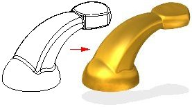
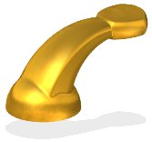

Formatting views
You can format the 3D views of a part or assembly. You can use several techniques, such as rendering or setting lights, to enhance 3D views. You can apply these settings to more than one view using a view style, or you can format a single view.

The easiest way to format the current view is using the commands on the View tab→Style group. For example, you can specify whether a part or assembly is displayed using visible edges (A), visible and hidden edges (B), shaded (C), or shaded with visible edges (D).
The View Overrides command on the Format menu provides additional capabilities to format a view. You can set rendering properties, define and modify light sources, set background colors, and so forth. For example, you can specify that the part casts shadows, reflects light sources, and define an anti-alias level to improve the view quality.

Rendering
Rendering provides a more realistic view of a model. You can apply different rendering methods to current model. You can also render a smooth, shaded image of the model or an outline image that displays horizon (or silhouette) lines as opposed to pure wireframe.
Setting perspective
You can also create perspective images so that your parts and assemblies appear more realistic. There are several perspective settings available. The value of the settings refers to a 35 mm camera lens focal length. As the angle increases, the distance to the object decreases, making the object appear closer. For example, the angle in the first picture (A) is wider than the angle in the second (B), so that the first picture appears closer.

Setting lights
You can also enhance the view of the model with various lighting options, much like a photographer uses lights to change the appearance of an object in a photograph. One way to do this is to define the light sources and their intensities. The eight light sources are directional and are based on the view. You change the intensity of the light at the angle you want.
Another way to enhance the view with lighting options is to vary the intensity of the light sources. If you use depth fading, elements that are farther away in the view appear darker; elements that are closer appear brighter. You can set the minimum illumination of any element in the view, regardless of which lights illuminate the element.
You can also set the ambient light values. This means that you can define the minimum illumination for any element, regardless of which lights illuminate the object. By default, the ambient light value has a value of twelve percent luminance.
Applying formats
When you format a view by rendering or setting the lights, you can easily control how elements are presented in a window. You can format views in the following ways:
-
You can use the Wire Frame, Visible Edges, Visible and Hidden Edges, Shaded, and Shaded with Visible Edges on the View tab→Styles group→View Styles palette to quickly format the current window. You can also display the palette by clicking the View Styles button at bottom-right of the application window.
-
Use Drop Shadow on the View tab→Styles group to apply a shadow underneath the model.
-
Use Floor Reflection on the View tab→Styles group to apply a mirror reflection underneath the model.
-
Use Single Color Edges on the View tab→Styles group to apply a custom color to all model edges.
-
Use High-Quality Rendering on the View tab→Styles group to improve the appearance of low face-count models and enable the display of bump maps.
-
To apply unique settings to a view, you can use the View Overrides command on the View tab→Style group. The formats you apply with this command override the view style of the active window.
-
To apply the same settings to more than one window quickly and efficiently, you can create and apply a view style with the Styles command on the View tab→Style group.
How do I
Change the current view settingsSharpen a View
Learn more
Optimizing Solid Edge display performanceLook up more details
View Overrides dialog boxBackground tab (View Overrides dialog box)
Lights tab (View Overrides dialog box)
Reflection Box tab (View Overrides dialog box)
Orient Reflection Box dialog box
Rendering tab (View Overrides dialog box)
Floor Shadow command
Outline with Drop Shadow command
Floor Reflection command
Single Color Edges command
Shaded command
Shaded with Visible Edges command
Sharpen command
View Overrides command
Visible and Hidden Edges command
Visible Edges command
Wire Frame command